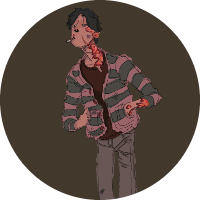
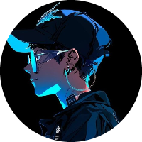

Novos Feiticeiros Procurados
PROCURADO VIVO OU MORTO
Nome: Gustavo Cruz
Características: Acompahado de um shikigami, possui resistência sobre humanas e estranhos poderes de transformação, sua técnica inata segue um mistério, mas seu trunfo são batalhas prolongadas.
Modo de neutralização: Primeiro destrua seu shikigami cobra, depois opte por usar venenos potente, eu pessoalmente usaria gás cloro ou lacrimogéneo.
Última Localização: Rio de Janeiro, RJ
PROCURADO VIVO OU MORTO

Nome: Katharine Falcone
Características: Diversos shikigamis, habilidade de teleporte, 6 olhos e energia infinita
Modo de neutralização: Explosões de grandes áreas afetando todos os shikigamis ou multiplos disparos focalizados. Caso o Teleporte se torne uma preocupação, o ideal é manter um refém para chantagem emocional.
Última Localização: Rio de Janeiro, RJ
PROCURADO VIVO OU MORTO
Características: Ataques de longa distância, grande versatilidade e o mais preoupante, expansão de domínio.
Modo de neutralização: Um golpe furtivo à queima roupa ou um ataque de longa distância, como um sniper.
Última Localização: Rio de Janeiro, RJ
PROCURADO APENAS VIVO
.png)
Nome: João rocha
Características: Mestre em armamentos e com um grande arsenal em mãos, seu físico aliado ao seus equipameto o torna um oponente feroz
Modo de neutralização: O ideial é optar por restringir seus movimentes e capturá-lo. Machucados ou mebros faltando não serão um problema desde que ele ainda esteja em posse de suas faculdades mentais.
Última Localização: Rio de Janeiro, RJ
PROCURADO APENAS VIVO
.png)
Nome: Maldição domada
Características: Acompanha João Rocha, mas não é excepcinalmente forte.
Modo de neutralização: Nenhum aranhão será tolerado.
Última Localização: Rio de Janeiro, RJ